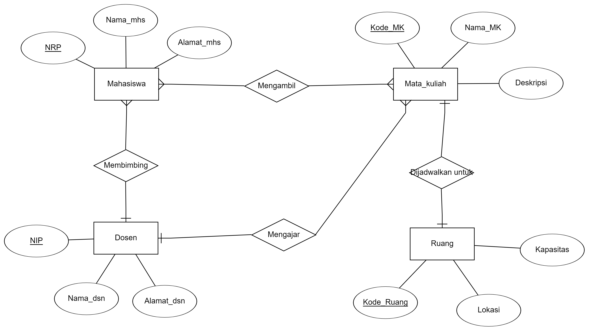

Erd atau Entity Relationship Diagram adalah suatu bentuk diagram yang menjelaskan hubungan antar objek – objek data yang mempunyai hubungan antar relasi
| ERD Penjual merupakan aktifitas menjual produk, bisa berupa barang ataupun jasa. Aktifitas ini di lakukan oleh dua pihak yakni penjual dan pembeli. Pada studi kasus kali ini kita akan coba membuat perancangan basis data menggunakan pemodelan |
| Aturan |
Rancanglah diagram E-R dari kasus aplikasi database sederhana untuk sistem informasi akademis suatu universitas.
| 1. Entitas yang ada |
|---|
|
|
|
|  |
Phone : +6285694944616
Email : rahmandaalif9@gmail.com
Address : JL Bonjol, Bekasi Selatan